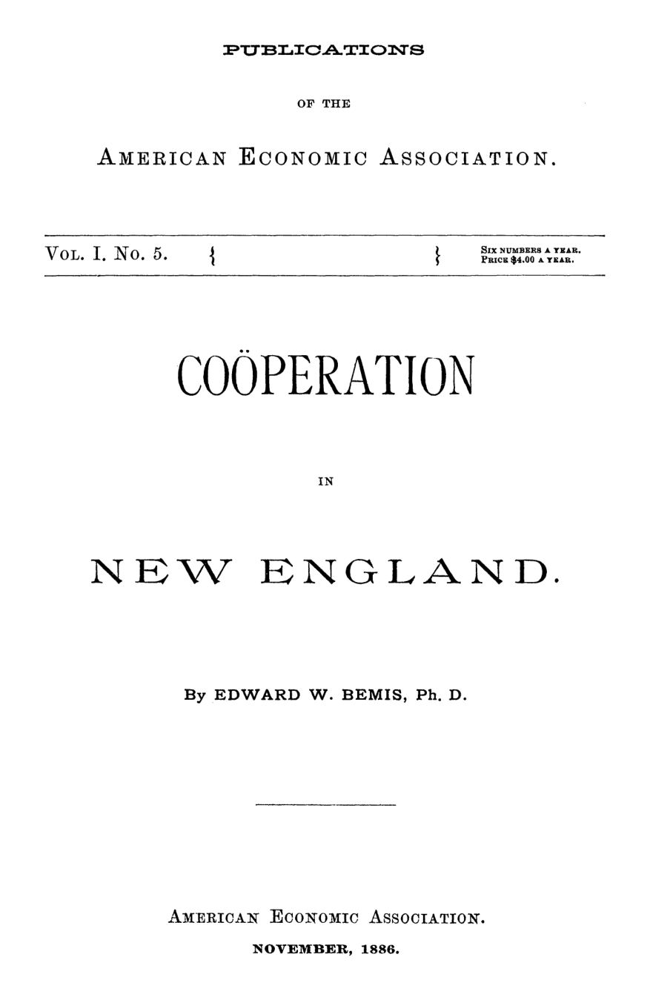

Sabão, chá e governança: por que as cooperativas quebravam
Leitura: 7 min
Edward W. Bemis passou em revista quatro décadas de cooperativas na Nova Inglaterra. As lojas que vendiam a preço de custo quebraram; ficaram as que acertaram preço, despesa e governança.


Em 6 de outubro de 1845, cerca de uma dúzia de pessoas reuniu-se numa sala no andar de cima do Boylston Market, em Boston, e abriu um negócio com uma caixa de sabão e meia caixa de chá. Diziam-se pobres e pouco versadas nos “artifícios do comércio”. Ali nascia a primeira loja da futura New England Protective Union, ponto de partida do levantamento que Edward W. Bemis publicou em novembro de 1886 pela American Economic Association.
Bemis visitou lojas, fábricas e bancos, trocou cartas com gerentes e copiou estatutos. O resultado é menos um elogio do movimento do que um manual de como ele falhava.
Por que a Protective Union se desfez?
A organização central foi formada em 7 de janeiro de 1847 por doze divisões locais, dez delas em Massachusetts. O modelo era simples: vender à vista, perto do custo, e comprar por um agente em Boston. Em outubro de 1852 já havia 403 subdivisões.
Então, escreve Bemis, a união virou desunião. Muitas divisões deixaram de comprar pela agência central e só lhe mandavam os pedidos trabalhosos. Em 1853 o agente foi substituído, seus aliados fundaram uma organização rival, a American Protective Union, e as duas começaram a declinar por volta de 1858. A Guerra Civil acabou de desmontá-las.
William F. Young, secretário da organização, listou as causas: falta de unidade, imitação das lojas rivais em luxo e reformas, abandono do pagamento à vista e gerentes despreparados. Bemis acrescenta uma fragilidade de desenho. Quem promete vender mais barato que todos convida o concorrente a oferecer um artigo abaixo do custo e atrair a freguesia. Havia também a saída silenciosa: lojas que subiam preços e dividendos até as ações se concentrarem nas mãos de poucos.
“O fracasso desses experimentos se deve menos aos métodos do que aos homens.” (“The failure of these experiments is not so much due to methods as to men.”)
O que deu errado em Springfield?
Em janeiro de 1874, uma convenção em Springfield, Massachusetts, fundou a Ordem dos Sovereigns of Industry, sob a liderança de William H. Earle, fruticultor de Worcester. No auge, os conselhos que prestaram contas somavam 27.984 membros.
A loja de Springfield começou com um comprador voluntário, O. S. Brigham, que adquiria no atacado e não cobrava pelo serviço. Os carvoeiros locais recusavam-se a vender abaixo de US$ 10 a tonelada; a cooperativa achou um fornecedor em Hudson, Nova York, e passou a vender a US$ 7. Os comerciantes da cidade tiveram de baixar os preços também.
Em 1876 as vendas chegaram a US$ 134.813,73. Mas a política de vender a preço de custo provocou a concorrência que atacadistas descreveram como a mais feroz de Massachusetts. Os rivais vendiam açúcar abaixo do custo; a loja só podia vender aos membros da ordem, que podiam comprar em qualquer lugar.
O defeito mais grave era de governança. O capital vinha de empréstimos dos membros aos conselhos, mas os diretores eram eleitos pelos conselhos inteiros, não por quem tinha posto dinheiro. Bemis descreve uma empresa dirigida pelos votos de uma democracia cuja maior parte nada contribuíra para o capital. Carpinteiros e ex-funcionários do Arsenal viraram gerentes; nenhum par de auditores conseguiu fechar as contas; mercadorias foram vendidas a crédito contra o estatuto.
O plano de Rochdale foi adotado em 1878, tarde demais. Em 22 de janeiro de 1879 a corporação votou pela dissolução, depois de perder boa parte do capital. A crise de 1874 a 1879 completou o serviço: desempregados não pagavam à vista e pressionavam os conselhos por crédito.
O que sobreviveu, e por quê?
As lojas que duraram seguiam, em geral, o plano de Rochdale: vender a preço de mercado e devolver o excedente aos compradores em proporção às compras, depois de pagar juros modestos ao capital e formar reserva. Um voto por sócio, ações pequenas e limite por pessoa. Vender a preço corrente, dizia o roteiro dos Sovereigns, “desarma a oposição”.
A outra regra era de custo. Em onze lojas bem-sucedidas, as despesas correntes ficavam em média em 7,7% do movimento. Bemis conclui que aluguel, carroças, empregados demais e aparência “elegante” arruinavam mais cooperativas do que qualquer outra causa, e fixa um teto: despesas de no máximo um doze avos do movimento garantido.
O caso mais bem-sucedido não era uma loja. A lei de Massachusetts de 1877 criou os bancos cooperativos, em que ações de US$ 200 eram pagas à razão de US$ 1 por mês. O dinheiro arrecadado era emprestado todo mês aos sócios que oferecessem o maior prêmio, e os dividendos ficavam, em geral, entre 6% e 7%.
Bemis faz as contas de um empréstimo de US$ 2.000: US$ 22,50 por mês durante cerca de doze anos, até que as ações do tomador valham o mesmo que a dívida e as duas se cancelem. Ele admite que um banco de poupança sairia mais barato no papel. Mas mal haveria um homem em mil que guardasse dinheiro todo mês por vontade própria; a obrigação mensal era a justificativa do sistema.
“Antes que o homem se dê conta, já pagou pela sua casa.” (“Before the man is aware of it, he has paid for his home.”)
A cooperação chega à fábrica?
Na produção, as dificuldades eram maiores. A Somerset Cooperative Foundry, organizada em 1867, dava prejuízo em mãos privadas até ser comprada pelos fundidores; desde 1880 pagava 10% de dividendo. Mas, como na maioria das fábricas cooperativas descritas, o lucro ia só às ações, não ao trabalho.
Os fracassos repetiam os das lojas. Uma fábrica de móveis em Orange, criada em 1879, dissolveu-se em três anos por ciúmes sobre os salários, embora sem prejuízo financeiro. Uma fábrica de chapéus em South Norwalk fechou em outubro de 1886; seu presidente culpou a recusa da diretoria em pagar a um gerente o salário de mercado.
A forma sobre a qual Bemis é mais otimista é a participação nos lucros. A Peace Dale Manufacturing Company passou em 1878 a dividir com os empregados perto da metade do lucro líquido, proporcionalmente aos salários. Pagou em apenas quatro de oito anos, mas os donos diziam que o desperdício caíra.
“A participação nos lucros, mesmo quando fracassa, não leva o negócio ao fracasso.” (“Profit-sharing, even if a failure, brings no failure to the business.”)
Na minha leitura
O documento é uma aula de governança antes de o termo existir. Em Springfield, quem votava não arriscava capital; nas lojas que degeneraram, quem tinha capital acabou com todo o poder. As que sobreviveram encontraram um meio-termo: um voto por sócio, ações pequenas com limite por pessoa e gerentes pagos a preço de mercado e fiscalizados de perto.
Os bancos cooperativos dão a segunda lição: um bom desenho institucional pode compensar a fraqueza da vontade. Bemis não supõe operários mais virtuosos que os outros; supõe que poucos poupam sozinhos e monta uma obrigação mensal que poupa por eles.
Glossário
- Plano de Rochdale
- Modelo cooperativo inglês: vende a preço de mercado e devolve o excedente aos compradores conforme o volume de compras.
- Dividendo sobre compras
- Parte do lucro devolvida a cada freguês em proporção ao que ele comprou na loja, e não às ações que possui.
- Banco cooperativo
- Associação de poupança e crédito imobiliário em que os sócios pagam as ações em parcelas mensais e tomam empréstimos do fundo comum.
- Participação nos lucros
- Parte do lucro paga aos empregados além do salário, sem que eles aportem capital ou dirijam a empresa.
- Prêmio
- Valor extra que o sócio oferecia, em leilão mensal, pelo direito de tomar empréstimo do banco cooperativo.
Fontes
- Coöperation in New England (pp. 7–136). JSTOR · Internet Archive (PDF)
- Sumário da edição no JSTOR: Publications of the American Economic Association, vol. 1, nº 5.
Documento em domínio público (EUA, publicado antes de 1931), via JSTOR Early Journal Content e Internet Archive. Resumo e comentário do autor deste site, sem afiliação com a American Economic Association. Encontrou um erro? Escreva: a correção é publicada no próprio texto, com data.
← Nº 3 · Os tanoeiros que dispensaram o patrão Nº 5 · Quem define o piso da concorrência? Adams contra o laissez-faire →